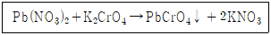
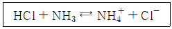
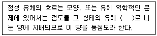

화학분석기능사 (2009-07-12 기출문제)
1과목: 일반화학
1. 다음 물질 중 승화와 관계가 없는 것은?
- 드라이아이스
- 나프탈렌
- 알코올
- 요오드
(정답률: 80%)

2. 다음 물질 중 물에 가장 잘 녹는 기체는?
- NO
- C2H2
- NH3
- CH4
(정답률: 73%)
3. 다음 중 주기율표상 V족 원소에 해당되지 않는 것은?
- P
- As
- Si
- Bi
(정답률: 74%)
4. 금속결합의 특징에 대한 설명으로 틀린 것은?
- 양이온과 자유전자 사이의 결합이다.
- 열과 전기의 부도체이다.
- 연성과 전성이 크다.
- 광택을 가진다.
(정답률: 84%)
5. 0℃, 2atm에서 산소분자수가 2.15×1021 개다. 이 때 부피는 약 몇 mL 가 되겠는가?
- 40 mL
- 80 mL
- 100 mL
- 120 mL
(정답률: 41%)
6. 0.001M의 HCl 용액의 pH는 얼마인가?
- 2
- 3
- 4
- 5
(정답률: 75%)
7. 원자번호 7번인 질소(N)은 2p 궤도에 몇 개의 전자를 갖는가?
- 3
- 5
- 7
- 14
(정답률: 63%)
8. HClO4에서 할로겐원소가 갖는 산화수는?
- +1
- +3
- +5
- +7
(정답률: 70%)
9. 황산(H2SO4) 용액 100 mL에 황산이 4.9g 용해되어 있다. 이 황산용액의 노르말 농도는?
- 0.5N
- 1N
- 4.9N
- 9.8N
(정답률: 47%)
10. 다음 중 포화탄화수소 화합물은?
- 요오드 값이 큰 것
- 건성유
- 시클로헥산
- 생선기름
(정답률: 89%)
11. 다음 중 식물 세포벽의 기본구조 성분은?
- 셀룰로오스
- 나프탈렌
- 아닐린
- 에틸에티르
(정답률: 91%)
12. 펜탄의 구조이성질체는 몇 개 인가?
- 2
- 3
- 4
- 5
(정답률: 84%)
13. 열의 일당량의 값으로 옳은 것은?
- 427 kgf·m/kcal
- 539 kgf·m/kcal
- 632 kgf·m/kcal
- 778 kgf·m/kcal
(정답률: 57%)
14. 다음 중 명명법이 잘못된 것은?
- NaClO3 : 아염소산나트륨
- Na2SO3 : 아황산나트륨
- (NH4)2SO4 : 황산암모늄
- SiCl4 : 사염화규소
(정답률: 79%)
15. 다음 중 요오드포름 반응도 일어나고 은거울 반응도 일어나는 물질은?
- CH3CHO
- CH3CH2OH
- HCHO
- CH3COCH3
(정답률: 52%)
16. 에탄올에 진한 황산을 촉매로 사용하여 160~170℃의 온도를 가해 반응시켰을 때 만들어지는 물질은?
- 에틸렌
- 메탄
- 황산
- 아세트산
(정답률: 70%)
17. 원자의 K 껍질에 들어있는 오비탈은?
- s
- p
- d
- f
(정답률: 78%)
18. 다음 착이온 Fe(CN)64- 의 중심 금속이온의 전하수는?
- +2
- -2
- +3
- -3
(정답률: 59%)
19. 결정의 구성단위가 양이온과 전자로 이루어진 결정형태는?
- 금속결정
- 이온결정
- 분자결정
- 공유결합결정
(정답률: 56%)
20. 비활성기체에 대한 설명으로 틀린 것은?
- 다른 원소와 화합하지 않고 전자배열이 안정하다.
- 가볍고 불연소성이므로 기구, 비행기 타이어 등에 사용된다.
- 방전할 때 특유한 색상을 나타내므로 야간광고용으로 사용된다.
- 특유의 색깔, 맛, 냄새가 있다.
(정답률: 89%)
2과목: 분석화학
21. 다음 중 비전해질은 어느 것인가?
- NaOH
- HNO3
- CH3COOH
- C2H5OH
(정답률: 51%)
22. 다이아몬드, 흑연은 같은 원소로 되어 있다. 이러한 단체를 무엇이라 하는가?
- 동소체
- 전이체
- 혼합물
- 동위화합물
(정답률: 86%)
23. 이소프렌, 부타디엔, 클로로프렌은 다음 중 무엇을 제조할 때 사용되는가?
- 합성섬유
- 합성고무
- 합성수지
- 세라믹
(정답률: 79%)
24. 이산화탄소가 쌍극자모멘트를 가지지 않는 주된 이유는?
- C=O 결합이 무극성이기 때문
- C=O 결합이 공유 결합이기 때문
- 분자가 선형이고 대칭이기 때문
- C와 O의 전기음성도가 비슷하기 때문
(정답률: 66%)
25. 용액의 끓는점 오름은 어느 농도에 비례하는가?
- 백분율 농도
- 몰 농도
- 몰랄 농도
- 노르말 농도
(정답률: 71%)
26. KMnO4 는 어디에 보관하는 것이 가장 적당한가?
- 에보나이트병
- 폴리에틸렌병
- 갈색 유리병
- 투명 유리병
(정답률: 89%)
27. 화학반응에서 촉매의 작용에 대한 설명으로 틀린 것은?
- 평형이동에는 무관하다.
- 물리적 변화를 일으킬 수 있다.
- 어떠한 물질이라도 반응이 일어나게 한다.
- 반응 속도에는 소량을 가하더라도 영향이 미친다.
(정답률: 65%)
28. Hg2Cl2는 물 1L에 3.8×10-4g 이 녹는다. Hg2Cl2의 용해도곱은 얼마인가? (단, Hg2Cl2의 분자량은 472 이다.)
- 8.⑤ × 10-7
- 80.5 × 10-8
- 6.48 × 10-13
- 5.21 × 10-19
(정답률: 44%)
29. 다음 염소산 화합물의 세기순서가 옳게 나열된 것은?
- HOCl ＞ HClO2 ＞ HClO3 ＞ HClO4
- HClO4 ＞ HOCl ＞ HClO3 ＞ HClO2
- HClO4 ＞ HClO3 ＞ HClO2 ＞ HOCl
- HOCl ＞ HClO3 ＞ HClO2 ＞ HClO4
(정답률: 85%)
30. 양이온계통 분석에서 가장 먼저 검출되어야 하는 이온은?
- Ag+
- Cu2+
- Mg2+
- NH4+
(정답률: 61%)
31. 다음 반응에서 침전물의 색깔은?

- 검은색
- 빨간색
- 흰색
- 노란색
(정답률: 66%)
32. 황산(H2SO4 = 98) 1.5노르말 용액 3L을 1노르말용액으로 만들고자 한다. 물은 몇 L 가 필요한가?
- 1.5 L
- 2.5 L
- 3.5 L
- 4.5 L
(정답률: 49%)
33. 페놀류의 정색반응에 사용되는 약품은?
- CS2
- KI
- FeCl3
- (NH4)2Ce(NO3)6
(정답률: 73%)
34. 미지 농도의 염산용액 100mL를 중화하는데 0.2N NaOH 용액 250mL가 소모되었다. 염산 용액의 농도는?
- 0.⑤N
- 0.1N
- 0.2N
- 0.5N
(정답률: 52%)
35. 다음 중 제3족 양이온으로 분류하는 이온은?
- Al3+
- Mg2+
- Ca2+
- As3+
(정답률: 70%)
36. 기체의 용해도에 대한 설명으로 옳은 것은?
- 질소는 물에 잘 녹는다.
- 무극성인 기체는 물에 잘 녹는다.
- 기체는 온도가 올라가면 물에 녹기 쉽다.
- 기체의 용해도는 압력에 비례한다.
(정답률: 81%)
37. 메탄올(CH3OH, 밀도 0.8 g/mL) 25mL를 클로로포름에 녹여 500mL를 만들었다. 용액 중의 메탄올의 몰농도(M)는 얼마인가?
- 0.16
- 1.6
- 0.13
- 1.25
(정답률: 42%)
38. 다음 반응식에서 브뢴스테드-로우리가 정의한 산으로만 짝지어진 것은?

- HCl, NH4+
- HCl, Cl-
- NH3, NH4+
- NH3, Cl-
(정답률: 70%)
39. 제4족 양이온 분족시 최종 확인 시약으로 디메틸글리옥심을 사용하는 것은?
- 아연
- 철
- 니켈
- 코발트
(정답률: 72%)
40. 침전적정법 중에서 모르(Mohr)법에 사용하는 지시약은?
- 질산은
- 플루오르세인
- NH4SCN
- K2CrO4
(정답률: 57%)
3과목: 기기분석
41. 유리 기구의 취급 방법에 대한 설명으로 틀린 것은?
- 유리 기구를 세착할 때에는 중크롬산칼륨과 황산의 혼합용액을 사용한다.
- 유리 기구와 철제, 스테인리스강 등 금속으로 만들어진 실험 실습 기구는 같이 보관한다.
- 메스플라스크, 뷰렛, 메스실린더, 피펫 등 눈금이 표시된 유리 기구는 가열하지 않는다.
- 깨끗이 세척된 유리 기구는 유리 기구의 벽에 물방울이 없으며, 깨끗이 세척되지 않은 유리 기구의 벽은 물방울이 남아 있다.
(정답률: 85%)
42. 비색계의 원리와 관계가 없는 것은?
- 두 용액의 물질의 조성이 같고 용액의 깊이가 같을 때 두 용액의 색깔의 짙기는 같다.
- 용액 층의 깊이가 같을 때 색깔의 짙기는 용액의 농도에 반비례한다.
- 농도가 같은 용액에서는 그 색깔의 짙기는 용액 층의 깊이에 비례한다.
- 두 용액의 색깔이 같고 색깔의 짙기가 같을 때라도 같은 물질이 아닐 수 있다.
(정답률: 56%)
43. pH4인 용액 농도는 pH6인 용액 농도의 몇 배인가?
- 1/2
- 1/200
- 2배
- 100배
(정답률: 81%)
44. 가스크로마토그래피(GC)에서 운반가스로 주로 사용되는 것은?
- O2, H2
- O2, N2
- He, Ar
- CO2, CO
(정답률: 88%)
45. 전위차법에서 사용되는 기준전극의 구비조건이 아닌 것은?
- 반전지 전위값이 알려져 있어야 한다.
- 비가역적이고 편극전극으로 작동하여야 한다.
- 일정한 전위를 유지하여야 한다.
- 온도변화에 히스테리시스 현상이 없어야 한다.
(정답률: 79%)
46. 다음 ( )에 들어갈 용어는?

- 밀도
- 부피
- 압력
- 온도
(정답률: 84%)
47. 원자를 증기화하여 생긴 기저상태의 원자가 그 원자층을 투과하는 특유파장의 빛을 흡수하는 성질을 이용한 것으로 극소량의 금속성분의 분석에 많이 사용되는 분석법은?
- 가시·자외선 흡수분광법
- 원자 흡수분광법
- 적외선 흡수분광법
- 기체크로마토그래피법
(정답률: 62%)
48. 적외선 흡수분광법에서 액체시료는 어떤 시료판에 떨어뜨리던지 발라서 측정하는가?
- K2CrO4
- KBr
- CrO3
- KMnO4
(정답률: 48%)
49. 적외선흡수 스펙트럼에서 1700cm-1 부근에서 강한 신축진동(stretching vibration) 피크를 나타내는 물질은?
- 아세틸렌
- 아세톤
- 메탄
- 에탄올
(정답률: 50%)
50. 이상적인 pH 전극에서 pH가 1 단위 변할 때, pH 전극의 전압은 약 얼마나 변하는가?
- 96.5 mV
- 59.2 mV
- 96.5 V
- 59.2 V
(정답률: 63%)
51. 고성능 액체크로마토그래피는 고정상의 종류에 의해 4가지로 분류된다. 다음 중 해당되지 않는 것은?
- 분배
- 흡수
- 흡착
- 이온교환
(정답률: 50%)
52. 강산이나 강알칼리등과 같은 유독한 액체를 취할 때 실험자가 입으로 빨아 올리지 않기 위하여 사용하는 기구는?
- 피펫필러
- 자동뷰렛
- 홀피펫
- 스포이드
(정답률: 74%)
53. 분광광도계의 광원 중 중수소 램프는 어느 범위에서 사용하는 광원인가?
- 자외선
- 가시광선
- 적외선
- 감마선
(정답률: 45%)
54. 가스크로마토그래피에 검출기에서 황, 인을 포함한 화합물을 선택적으로 검출하는 것은?
- 열전도도 검출기(TCD)
- 불꽃광도 검출기(FPD)
- 열이온화 검출기(TID)
- 전자포획형 검출기(ECD)
(정답률: 60%)
55. 옷, 종이, 고무, 플라스틱 등의 화재로 소화 방법으로는 주로 물을 뿌리는 방법이 많이 이용되는 화재는?
- A급 화재
- B급 화재
- C급 화재
- D급 화재
(정답률: 83%)
56. 어떤 시료를 분광광도계를 이용하여 측정하였더니 투과도가 10%T 이었다. 이 때 흡광도는 얼마인가?
- 0.1
- 0.8
- 1
- 1.6
(정답률: 67%)
57. 가스크로마토그래피의 주요부가 아닌 것은?
- 시료 주입부
- 운반 기체부
- 시료 원자화부
- 데이터 처리장치
(정답률: 51%)
58. 불꽃이온화 검출기의 특징에 대한 설명으로 옳은 것은?
- 유기 및 무기화합물을 모두 검출할 수 있다.
- 검출 후에도 시료를 회수할 수 있다.
- 감도가 비교적 낮다.
- 시료를 파괴한다.
(정답률: 60%)
59. 분석하려는 시료용액에 음극과 양극을 담근 후, 음극의 금속을 전기화학적으로 도금하여 전해 전후의 음극무게 차이로부터 시료에 있는 금속의 양을 계산하는 분석법은?
- 전위차법(potentiometry)
- 전해무게분석법(electrogravimetry)
- 전기량법(coylometry)
- 전압전류법(voltammetry)
(정답률: 65%)
60. 중크롬산칼륨 표준용액 1000ppm 으로 10ppm 의 시료용액 100mL를 제조하고자 한다. 필요한 표준용액의 양은 몇 mL 인가?
- 1
- 10
- 100
- 1000
(정답률: 53%)